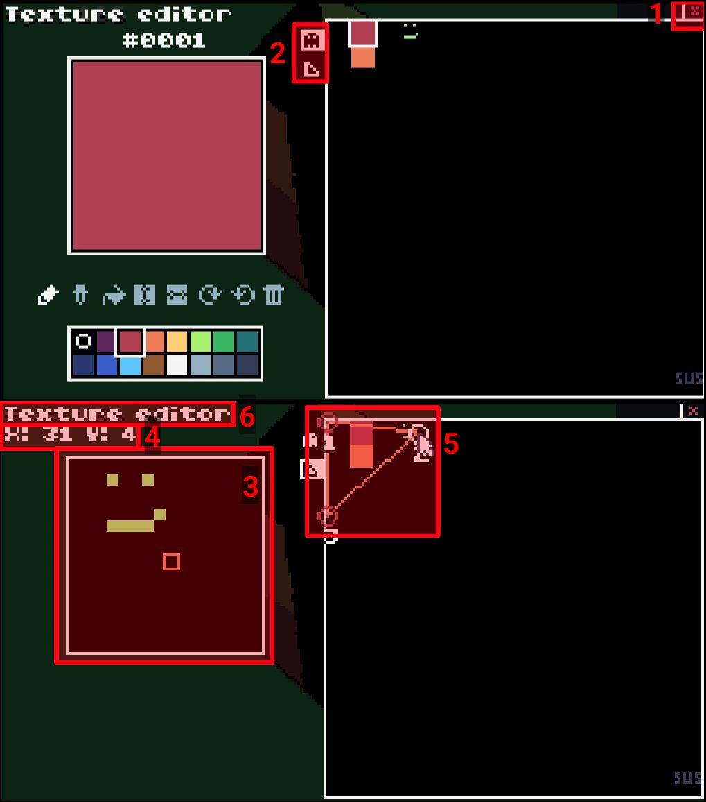

Texture Editor

1. Exit button
Click this to return to the main editor screen.
2. Mode tabs
There are two editing modes in the texture editor - sprite editing, and UV editing. The sprite editor functions basically the same as the standard TIC-80 sprite editor. The UV editor allows you to select a region of the spritesheet to display on the triangle.
3. Sprite minimap
Shows the area of the spritesheet around the cursor.
4. Cursor coordinates
Displays the current cursor position.
5. Polygon texture points
The points here indicate the area of the spritesheet that will be drawn on the triangle. They can be dragged around to adjust the mapping.
6. Editor name
Pretty self explanatory.